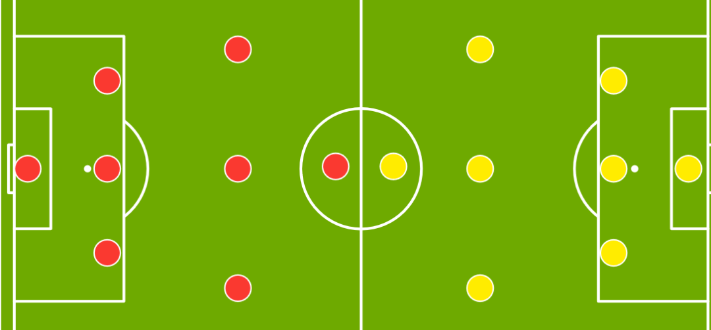
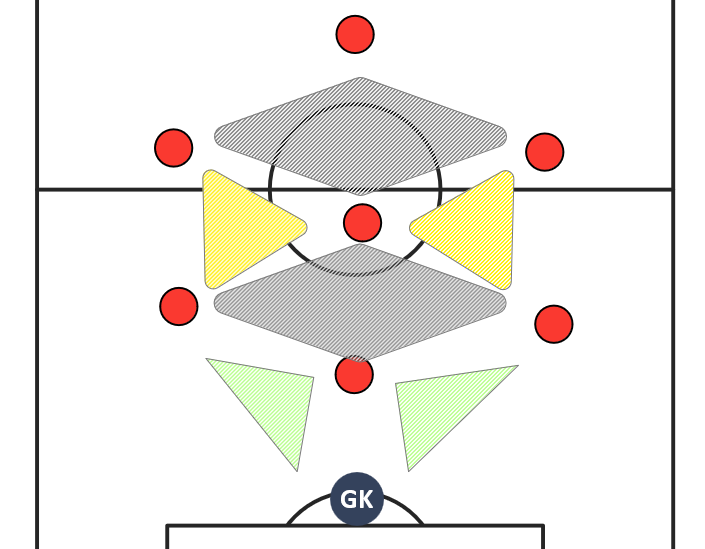
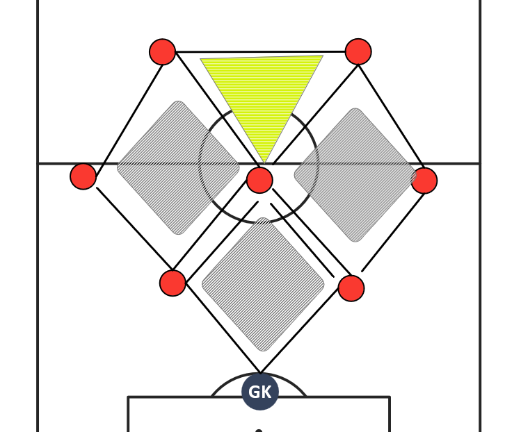
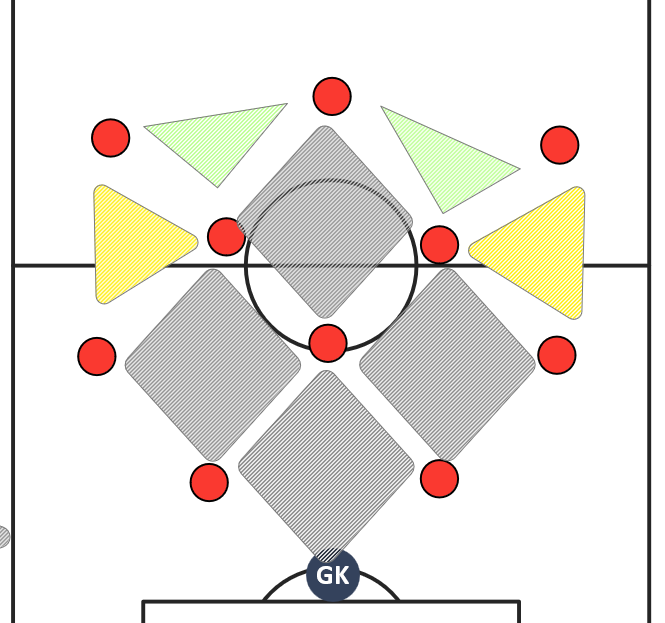
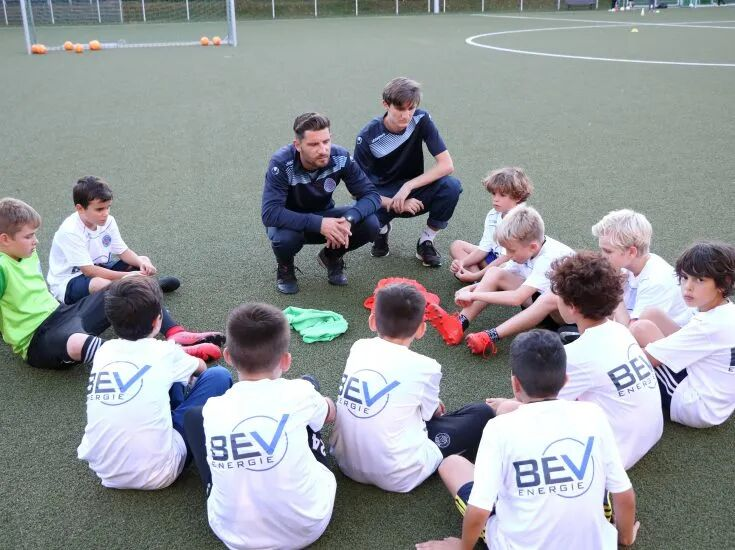

之前的文章中聊过，球员在成长阶段，先从5人制比赛开始，逐步过渡到8人制比赛，最后再过渡到真正的11人制足球比赛。
8人制比赛的特点
在球员发展的基础阶段子阶段1(U6至U8)，根据球员身心发展特点，球员参加的是5人制比赛。
通过5人制足球的训练、比赛，球员基本掌握了足球比赛中攻、防及转换的基本规律，对足球的技、战术的运用有了基本的认识。
相较5人制比赛，8人制比赛中球员可以更多地触球、完成1对1攻防，守门员能够更多地参与进攻等。

同时，8人制比赛可以采用真正的三条线的阵型与战术，除了攻防压迫外，真正中场的出现，能够帮助孩子更好的理解现代足球战术。
对抗程度，技、战术要求与11人制比赛相似，因此，青训大纲中8人制比赛是基础阶段子阶段2（U9至U12）的主要比赛赛制。
8人制与11人制比赛战术内容对比
我们推荐，青训阶段的8人制比赛中，采用的阵型多为3-3-1和2-3-2。其中，8人制战术中使用3-3-1阵型和2-3-2阵型时的三角形、菱形的概念分别如下图所示：



2-3-2阵型在运行逻辑上与11人制的3-4-3,、3-5-2等阵型十分类似，尤其是边路两名球员。而3-3-1阵型，不仅防守时阵型的整体移动与11人制的4-4-2十分类似，进攻中两名边路球员前提之后，与11人制4-2-3-1和4-3-3阵型的逻辑也十分相似。
比赛运行的逻辑
对于青春发育开始之前的孩子来说，这个阶段的重点是要从小打好基础，多进行技术动作与身体协调性练习。因此，在这个阶段的比赛，赢球不是首要的。所以MFS推荐大家使用3-3-1或是2-3-2阵型，来帮助孩子更好的适应未来的11人制比赛。
我们不仅要把阵型摆出来，更是要让阵型战术运作起来。对这个阶段的孩子来说，更正确的方式应该是这样的，鼓励孩子们通过地面传递的方式向前推进，同时运用近期所学的技术动作。
门将开球时，就可以尝试一些假动作调整身体朝向，干扰对手防守队形的整体移动。每个球员在场上都要尝试带两步，然后与队友寻求配合，直到球通过地面配合推进到对手禁区附近，才可以射门。这样的比赛才能更有效的帮助这个年龄段孩子成长，帮助他们更好的掌握技术动作，在神经系统发育完全前，最大限度的开发自己的技术能力。
战术安排上，可以不用刻意的去练习防守中的整体移动，但要让孩子引导压迫，要让孩子充分了解每个位置的职责。
PS：关于引导式压迫，详见【战术讲解】整体防守与引导式压迫

此外，比赛对手的安排与选择也是很重要的，如果连续跟实力更强的队伍比赛，那球员的自信心会受到打击。想象一下，我们要求孩子们在比赛中运用最近所学的技巧晃过对手后再出球，对手实力总是更强，孩子们的动作总是失败，一段时间后，孩子在场上就不敢做动作了，这不是我们愿意看到的。
因此，我们最好是能安排实力相近的队伍进行比赛，最好是对面的教练理念与你一致，将比赛的输赢放在第二位。
球员轮换
最后，我们再说说比赛中球员轮换的问题。
比如我们进行的是8人制比赛，场上是8名球员，慕尼黑足球学校的建议是给踢8人制比赛的队伍安排10-11名球员就可以了。如果球员更多，那么比赛时孩子们会围着教练，拉着教练的衣角问“我什么时候才能上场？”，作为教练，我们没有办法给出具体时间。
如果队伍中安排的球员过多，即是执行轮换，每个球员每场比赛也只能捞到7-8分钟的出场时间，这是不够的。
因此MFS的建议是队伍安排10名球员就差不多了，如果比赛时有孩子请假，就从低年龄段队伍抽调球员（这也可以作为对年龄更低球员的一种奖励）

再来说比赛中轮换的具体操作，8人制的比赛，比如我们可以从2-3-2阵型开始，当然你也可以选择其他的，我们这里拿2-3-2阵型举例。
赛前我们要设置好一套位置轮换规则，当教练喊出“换位”的时候，球员按照顺时针方向依次递进一个位置，右边前锋要退到右边路，右边路球员退到右中卫位置，等等依次类推，门将也要参与到位置轮换中去，因为现代足球中门将的脚下技术同样重要。
比赛时，教练每过5-6分钟喊一次“换位”，球员们按照事先制定的规则轮转，这样一场比赛下来，球员每个位置都可以踢一踢。
等到队伍里10名球员都熟悉了2-3-2阵型的每一个位置，我们再将整体阵型切换成3-3-1或是其他阵型，让球员熟悉不同阵型中不同位置的基本战术职责：
对于边路球员来说，身旁就是边线，对手只会在另一个方向；而中场中路球员则不一样，四面八方都可能有对手。对于后卫来说，绝大多数情况可以面向对手球门拿球；而前锋则不一样，80%的情况下都是背身拿球。
通过上面说到的比赛方式，球员可以最快速度的熟悉这些，同时会对整体战术的理解更上一层楼。
此外，这样的轮换也能保证球队内部的公平，足球训练不仅仅是球技的提升，足球还可以塑造孩子的人格。足球应该传递的是公平、团结、协作，如果让一名能力出众的孩子总是踢比赛，挤压其他孩子的出场空间，久而久之，这名孩子就会成为一个“自私者”，相信这是教练和家长都不愿看到的事情。

总之，我们要做到不给孩子“定性”，不要去区分“优秀的孩子”与“差劲的孩子”，每个个体的生长发育周期都是有差异的，一些球员10岁出头就能崭露头角，有的孩子却17岁才迎来爆发式涨球，我们不能因为孩子一时的差距就进行区别对待。作为教练，公平的对待每一个孩子是我们应该具备的基本素养，让孩子接受同样的训练、让孩子感受到同样的关怀、让孩子获得相同的比赛时间。轮换则是贯彻这一理念的最佳实践。
总结
当然，不把比赛的胜负放在首位，也不是说完全不考虑比赛的胜负。在前面的大框架下，我们也可以在训练中练习一些基础的小组配合，让球员们在比赛中运用出来，可以大大提升比赛胜率，提升孩子信心。
1B0足球小程序为大家准备了多样的小组配合，点击下方链接即可学习

文字与图片版权归各自权利人所有；排版根据抓取内容整理。